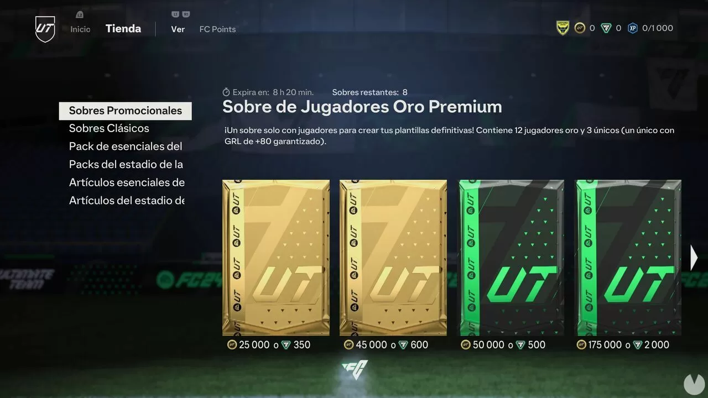
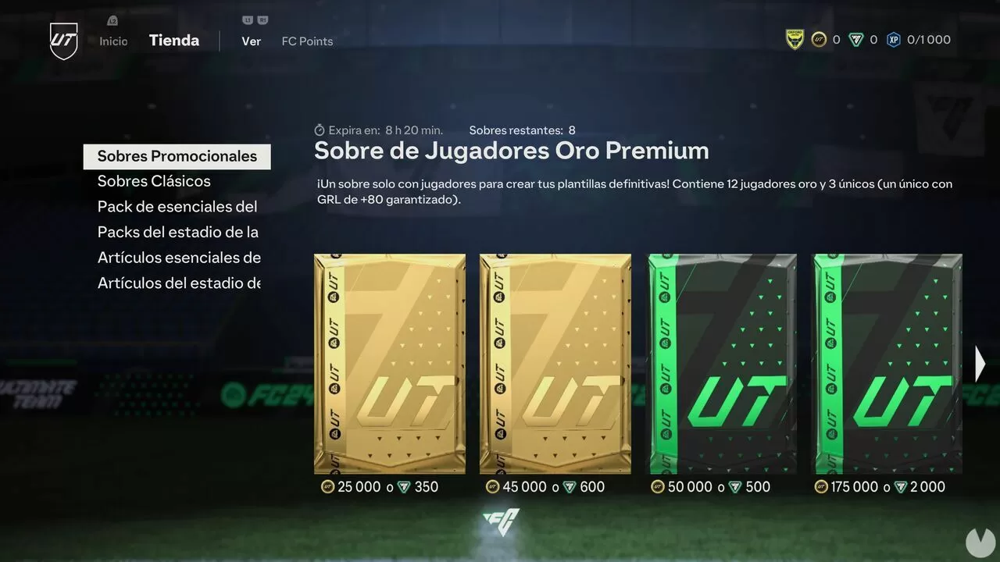

Abrir sobres:
Las cartas de jugadores se obtienen al abrir sobres. Puedes adquirir sobres en la tienda del juego o ganarlos como recompensas al jugar partidos.

Ultimate Team (UT) en EA Sports FC 24 es un modo de juego muy popular que te permite coleccionar
cartas de jugadores y construir tu propio equipo. Aquí tienes algunas formas de conseguir
nuevas cartas en UT:
Las cartas de jugadores se obtienen al abrir sobres. Puedes adquirir sobres en la tienda del juego o ganarlos como recompensas al jugar partidos.
Supera hitos y cumple objetivos en UT para recibir más sobres y, por lo tanto, más cartas.

Participa en el conjunto de misiones PRO de Champions para obtener artículos de evolución que transformarán tus cartas en “rojitos” de UT Champions